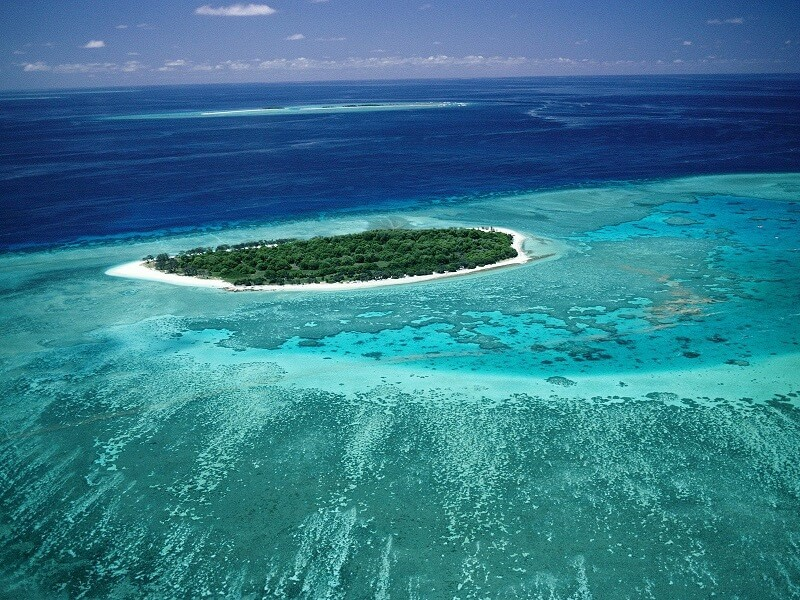
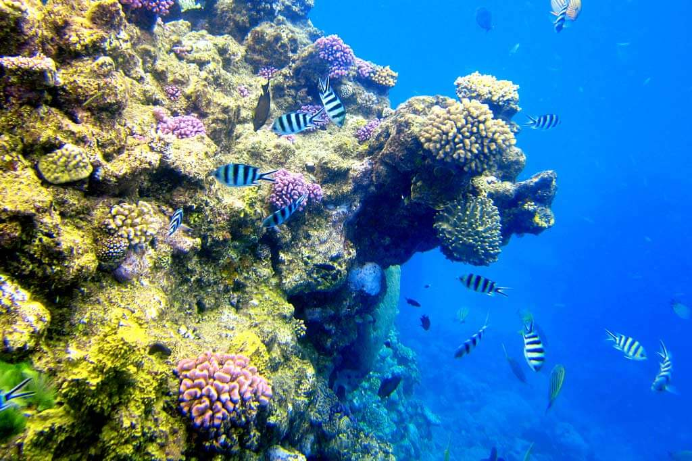
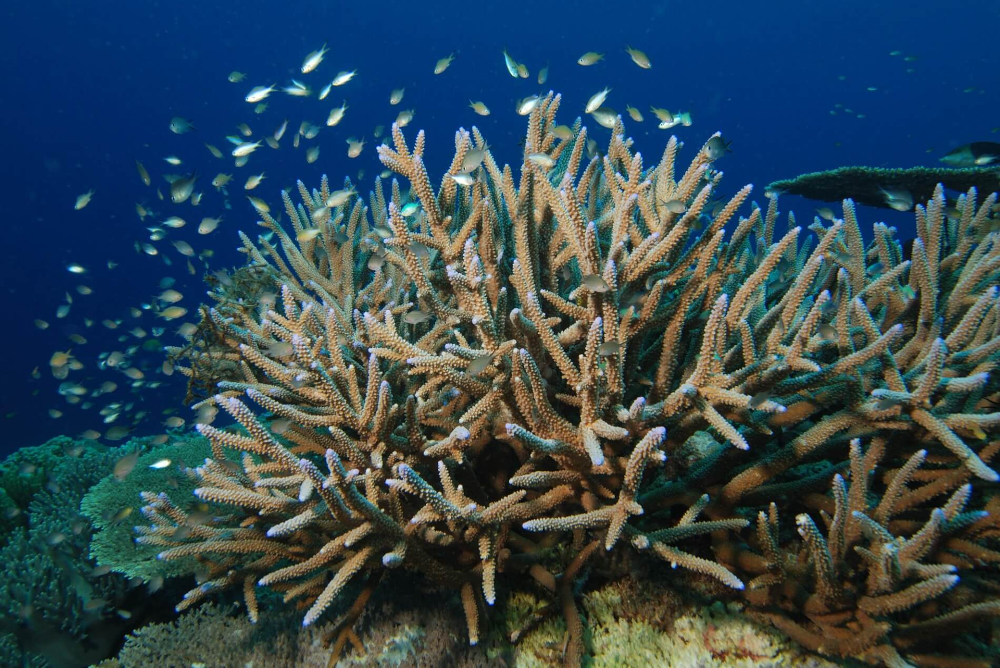
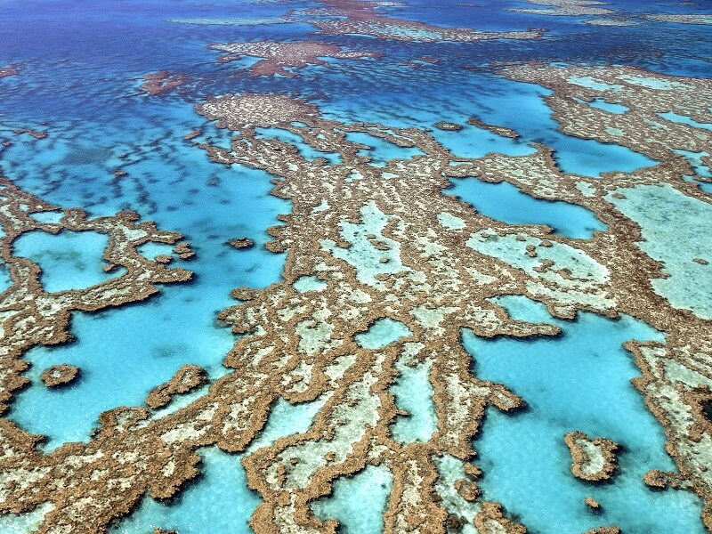
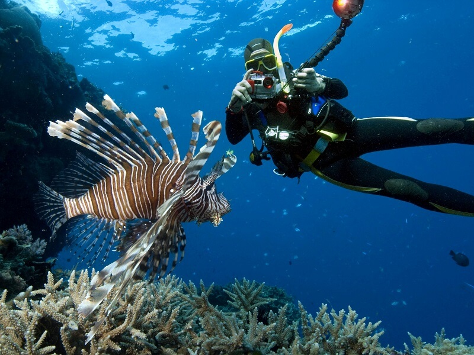
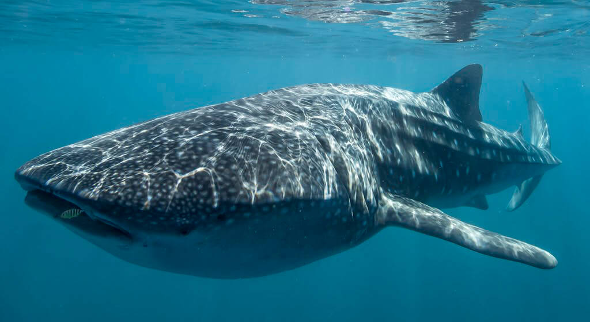
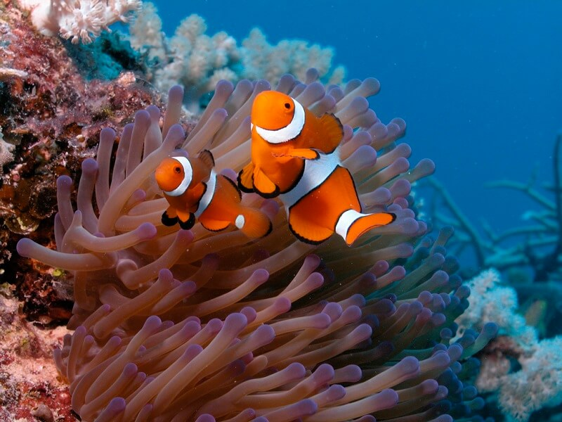
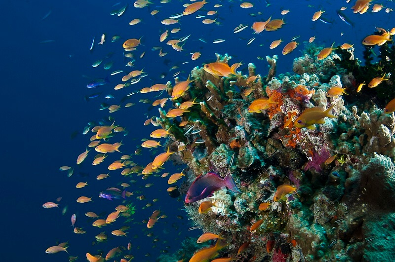
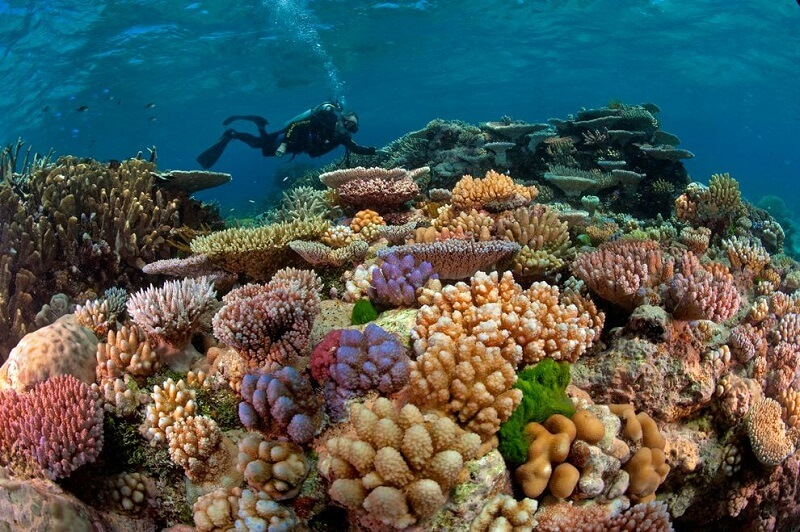

Вдоль побережья Австралии на северо-западе протянулся Большой Барьерный риф, представляющий собой огромную гряду коралловых рифов и островов

Крупнейшая в мире коралловая система по совместительству представляет собой самую крупную живую структуру на планете. Она включает почти 3000 различных рифов и более 900 островов, испещряющих разлогую лагуну. Площадь, охватываемая каменным морским гигантом, составляет 344 400 квадратных километров. Расположено природное чудо в Коралловом море, практически параллельно побережью Квинсленда, Австралия.
Современные исследования показывают, что первые рифы здесь стали образовываться примерно 18 млн лет назад. За это время старые рифы разрушались. а на их месте вырастали новые. На сегодняшний день на поверхности морской глади видна лишь небольшая часть кораллов, и лишь подводное плавание позволит созерцать наиболее полную и живописную картину.

Система образована миллиардами маленьких животных, размер которых обычно не превышает рисового зернышка, - коралловыми полипами. Их внешний вид подобен крошечной перевернутой медузе, сидящей в каменной чаше. Живут они вместе, колониями. Строить рифы самостоятельно полипы не в силах, для этого мудрая матушка-природа послала им помощников. Таковыми в данном случае выступают миллионы микроскопических водорослей, заточенных в щупальцах животных. Они преобразовывают солнечный свет в энергетическую пищу для кораллов. Данный симбиоз позволяет им превращать минералы в карбонат кальция и строить свои каменистые скелеты. Так каждая колония развивается и растет, обогащая местность целыми известняковыми массивами. Однако их мир очень беззащитен и хрупок: даже незначительное повышение температуры – на один градус – может спровоцировать гибель коралловых полипов.

Строить рифы самостоятельно полипы не в силах, для этого мудрая матушка-природа послала им помощников.
Таковыми в данном случае выступают миллионы микроскопических водорослей, заточенных в щупальцах животных. Они преобразовывают солнечный свет в энергетическую пищу для кораллов. Данный симбиоз позволяет им превращать минералы в карбонат кальция и строить свои каменистые скелеты. Так каждая колония развивается и растет, обогащая местность целыми известняковыми массивами. Однако их мир очень беззащитен и хрупок: даже незначительное повышение температуры – на один градус – может спровоцировать гибель коралловых полипов.

Основную часть рифа составляют свыше 2900 отдельных рифов, размеры которых колеблются от 0,01 км² до 100 км². Большинство из них спрятано под водной гладью, а для того, чтобы рассмотреть коралловые “скульптуры” более детально, придется воспользоваться дайверским снаряжением и погрузиться в теплые тихоокеанские воды. Увидеть рассекающие водную поверхность пики коралловых образований можно только во время отливов. Между побережьем и Большим Барьерным рифом простирается достаточно мелководная лагуна, глубина которой редко превышает 100 м.

Самая большая в мире экосистема знаменита не только огромным разнообразием коралловых рифов, но и своим поистине богатым подводным миром.
Описать все то богатство подводного мира, которое можно встретить на Большом Барьерном рифе, вряд ли удастся даже ученому, который годами занимался его исследованием.
Более чем 1 550 видов рыб живет среди разноцветных кораллов. Здесь обитает настоящий огромный «монстр» - китовая акула, питающаяся исключительно планктоном, которую «монстром» можно назвать разве что из-за ее размеров. Эта рыба занесена в книгу рекордов Гиннеса, как самая крупная из всех рыб, живущих на нашей планете.

Тысячи разных существ нашли свой дом в этой морской метрополии. Многие из них изысканно красивы, некоторые словно сошли со страниц научно-фантастического журнала, а некоторые способны принести смерть в мгновение ока.


Разнообразие форм жизни в Большом Барьерном рифе еще долгое время не будет давать исследователям покоя, ведь изучить все подводное богатство его флоры и фауны не такое уж и легкое задание. На его просторах нашли свой дом около 400 видов кораллов, поражающих изобилием форм и видов. Словно сказочный подводный сад, вся территория Большого Барьерного рифа пестрит яркими красками коралловых рифов всех цветов радуги. Самые распространенные цвета – различные оттенки красного, желтый, иногда белый, оранжевый, коричневый, а изредка даже встречается сиренево-пурпурный. Мягкие представители кораллов, у которых вместо известнякового скелета в тканях имеются твердые кристаллические структуры, именуемые склеритами, покрывают “тела” своих каменистых сородичей.

Об этом уникальном месте планеты было снято много документальных фильмов, самые известные из них - «BBC. Прогулки под водой. Большой Барьерный риф» (1991) и сериал, созданный тем же ВВС уже в 2012 году, “Большой барьерный риф”. Киноленты, несомненно, раскроют общую картину местности, однако для того, чтобы ощутить всю грандиозность данного чуда природы, нужно увидеть его воочию.
ВВЕРХ